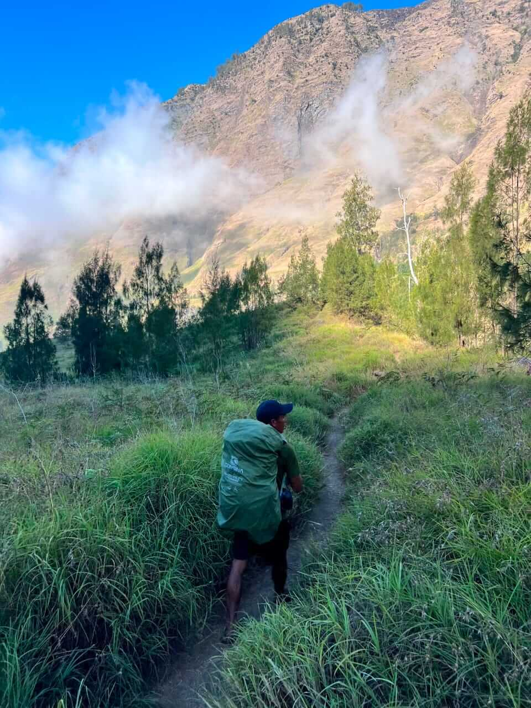

4D3N Sembalun – Senaru Join Group Trek
A Mount Rinjani join group trek: you share the trail, the crew and the cost with a small group of fellow travellers – and still get the same guide, porters, tents, mattress and meals as a private trip.

This is a join group trek – here's what that means
On the 4D3N Sembalun – Senaru join group trek you don't trek alone with a private crew. You join a sharing group of up to 8 travellers who booked the same route and date. Maximum 8 trekkers per group (2 Guide) is a rule of the Mount Rinjani National Park (TNGR), not our own. Together you share guide team, porters and cook, so the price per person stays low.
- Solo travellers welcome – you trek with your new join group
- Same facilities as a private trek: tent, thick mattress, sleeping bag, toilet tent and all meals
- Licensed English-speaking guide and porters who carry all the camping gear
- Trek Only if you have your own motorbike, or Standard with transport & hotel
Highlights
- Summit + extra time at the lake
- Hot springs & lake fishing
- Join group atmosphere – new trekking friends from all over the world
Day-by-day join group itinerary
Times are approximate. Your guide adjusts the pace to the join group and to the weather on the mountain.
Day 0 · Pick-up & Preparation · Standard package
- We will pick you up at the airport of Lombok or other place in Lombok island and transfer to our office in Senaru.
- Meet with us and your hiking guide to get a briefing and better prepare you for the journey, then check in homestay in Senaru.
- No hotel night: you ride your own motorbike to the village and meet your group on the morning of Day 1.
Day 1 · Sembalun → Sembalun Crater Rim (2,639 m)
- Wake up and have breakfast at the homestay.
- Drive to Sembalun village (1,100 m) and register at the Rinjani Information Center.
- Start trekking through open meadows toward Pos 1 (1,300 m) and Pos 2 (1,500 m).
- Arrive at Pos 3 (1,800 m) for lunch and rest.
- Ascend the steep 'Hills of Regret' to Sembalun crater rim (2,639 m).
- Arrive at basecamp, enjoy sunset views over the crater lake, dinner, and camp overnight.
Day 2 · Summit (3,726 m) → Segara Anak Lake (≈2,000 m)
- Wake up call with hot drinks and a light breakfast.
- Start the summit push up steep volcanic gravel.
- Reach the summit of Mt. Rinjani (3,726 m) for sunrise and panoramic views.
- Descend back to Sembalun crater rim camp for a full breakfast.
- Trek down into the crater to Segara Anak Lake (approx. 3–4 hours).
- Enjoy lunch, swim in the lake, soak in natural hot springs, have dinner, and camp by the lake.
Day 3 · Segara Anak Lake → Senaru Crater Rim (2,641 m)
- Breakfast by the lake and a relaxed morning (fishing or soaking in hot springs).
- Enjoy lunch beside the lake before preparing for the climb.
- Ascend from the lake up to Senaru crater rim (2,641 m) (approx. 3 hours).
- Set up camp at Senaru crater rim, watch the sunset over Mount Agung in Bali, followed by dinner and overnight camp.
Day 4 · Senaru Crater Rim → Senaru Village → Transfer
- Breakfast with sunrise views over the crater lake.
- Descend through the lush rainforest of Senaru (approx. 4–5 hours).
- Lunch break at Pos 2 Montong Satas in the jungle.
- Arrive at Senaru village (601 m). Car will transfer you to your next destination in Lombok.
Prices for this join group trek
Without transport & hotel.
Included
- Transport pick up from your hotel in Senaru or Sembalun
- Licensed English-speaking guide
- Porters for camping gear and food
- Tent, sleeping bag, mattress, toilet tent
- All meals, fruit and drinking water on the trek
- National park entrance fee
Not included
- Tips For guide and porter
- Hotel before and after the trek
- Personal porter, tips, travel insurance
| 1 person | USD 352 |
| 2–3 people | USD 347 |
| 4–6 people | USD 297 |
| 7–12 people | USD 277 |
USD per person, with transport & hotel.
Included
- Everything in Trek Only
- Pick-up within our transport area in Lombok
- 1 night hotel in Senaru before the trek
- Drop-off after the trek to Bangsal harbour, Senggigi or Mataram
Not included
- Boat ticket from the Gili islands to Lombok
- Hotel after the trek
- Personal porter, tips, travel insurance
Join group questions
Is the 4D3N Sembalun – Senaru trek a private trip?
No. This is a join group (sharing group) trek. You join a small group of other travellers on the same date and route – a maximum of 8 trekkers per group – this is a rule of the Mount Rinjani National Park (TNGR), not our own. Trekking Backpacker only runs join group treks – that is how the price stays low.
What is the difference between Trek Only and Standard?
Trek Only (USD 143 per person) is for travellers who ride their own motorbike to the village – no transport and no hotel. Standard (USD 277–352 per person, depending on group size) adds pick-up in Lombok, 1 night hotel in Senaru before the trek and drop-off afterwards.
Is the service the same on Trek Only?
Yes. Same guide, same porters, same tent, sleeping bag, mattress and toilet tent, and the same meals as on the Standard package.
Can I join the group alone?
Yes. Many solo travellers book a join group trek. You trek, eat and camp with the other people in your group.
Ready to join a Rinjani group?
Tell us your date, how many people, and whether you want Trek Only or Standard. We reply fast on WhatsApp.